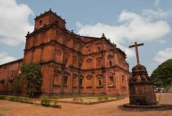
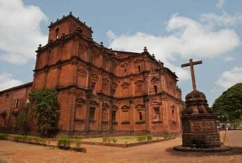
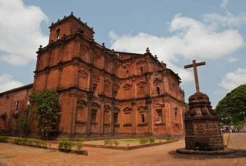

Goa is a state on the southwestern coast of India within the Konkan region, geographically separated from the Deccan highlands by the Western Ghats.It is bound by the Indian states of Maharashtra to the north, and Karnataka to the east and south, with the Arabian Sea in the west. It is India's smallest state by area and fourth-smallest by population. Goa has the highest GDP per capita among all Indian states,two and a half times as high as the GDP per capita of the country as a whole. The Eleventh Finance Commission of India named Goa the best-placed state because of its infrastructure, and India's National Commission on Population rated it as having the best quality of life in India (based on the commission's "12 Indicators").It is the third-highest ranking among Indian states in the human development index. Panaji is the state's capital, while Vasco da Gama is its largest city. The historic city of Margão in Goa still exhibits the cultural influence of the Portuguese, who first voyaged to the subcontinent in the early 16th century as merchants, and conquered it soon thereafter, whereupon Goa became an overseas territory of the Portuguese Empire, part of what was then known as Portuguese India, and remained as such for about 456 years until it was annexed by India in 1961.Goa's official language, which is spoken by a majority of its inhabitants, is Konkani. Goa is visited by large numbers of international and domestic tourists each year because of its white-sand beaches, active nightlife, places of worship, and World Heritage-listed architecture. It also has rich flora and fauna because it lies very close to the North Western Ghats rainforests, one of the rare biodiversity hotspots of the world.Rock art engravings found in Goa are one of the earliest known traces of human life in India.Goa, situated within the Shimoga-Goa Greenstone Belt in the Western Ghats (an area composed of metavolcanics, iron formations and ferruginous quartzite), yields evidence for Acheulean occupation. Rock art engravings (petroglyphs) are present on laterite platforms and granite boulders in Usgalimal near the west flowing Kushavati river and in Kajur.In Kajur, the rock engravings of animals, tectiforms and other designs in granite have been associated with what is considered to be a megalithic stone circle with a round granite stone in the centre.Petroglyphs, cones, stone-axe, and choppers dating to 10,000 years ago have been found in various locations in Goa, including Kazur, Mauxim, and the Mandovi-Zuari basin. Recently these petroglyphs have been included in the tentative list of UNESCO world heritage sites. Evidence of Palaeolithic life is visible at Dabolim, Adkon, Shigao, Fatorpa, Arli, Maulinguinim, Diwar, Sanguem, Pilerne, and Aquem-Margaon. Difficulty in carbon dating the laterite rock compounds poses a problem for determining the exact time period. Early Goan society underwent radical change when Indo-Aryan and Dravidian migrants amalgamated with the aboriginal locals, forming the base of early Goan culture.In the 3rd century BC, Goa was part of the Maurya Empire, ruled by the Buddhist emperor, Ashoka of Magadha. Buddhist monks laid the foundation of Buddhism in Goa. Between the 2nd century BC and the 6th century AD, Goa was ruled by the Bhojas of Goa. Chutus of Karwar also ruled some parts as feudatories of the Satavahanas of Kolhapur (2nd century BC to the 2nd century AD), Western Kshatrapas (around 150 AD), the Abhiras of Western Maharashtra, Bhojas of the Yadav clans of Gujarat, and the Konkan Mauryas as feudatories of the Kalachuris.The rule later passed to the Chalukyas of Badami, who controlled it between 578 and 753, and later the Rashtrakutas of Malkhed from 753 to 963. From 765 to 1015, the Southern Silharas of Konkan ruled Goa as the feudatories of the Chalukyas and the Rashtrakutas. Over the next few centuries, Goa was successively ruled by the Kadambas as the feudatories of the Chalukyas of Kalyani. They patronised Jainism in Goa. In 1312, Goa came under the governance of the Delhi Sultanate. The kingdom's grip on the region was weak, and by 1370 it was forced to surrender it to Harihara I of the Vijayanagara Empire. The Vijayanagara monarchs held on to the territory until 1469 when it was appropriated by the Bahmani sultans of Gulbarga. After that dynasty crumbled, the area fell into the hands of the Adil Shahis of Bijapur, who established as their auxiliary capital the city known under the Portuguese as Velha Goa (or Old Goa).In 1510, the Portuguese defeated the ruling Bijapur sultan Yusuf Adil Shah with the help of a local ally, Thimmayya or Timoji, a privateer.They set up a permanent settlement in Velha Goa (Old Goa). This was the beginning of Portuguese colonial rule in Goa that would last for four and a half centuries, until its annexation by India in 1961. The Goa Inquisition, a formal tribunal, was established in 1560, and was finally abolished in 1812. From the latter decades of the eighteenth century, the territory of Goa was composed of two segments: the central nucleus of the Velhas Conquistas (Old Conquests)—Bardes, Ilhas de Goa, and Salcette—which territories had been under Portuguese administration since the sixteenth century; and the Novas Conquistas (New Conquests)—Bicholim, Canacona, Pernem, Quepem, Sattari, and Sanguem—territories which had been successively added through the eighteenth century. In 1843, the Portuguese moved the capital to the Cidade da Nova Goa (City of New Goa), today known as Panaji (Panjim), from Velha Goa (Old Goa). By the mid-18th century, Portuguese expansions lost other possessions in India until their borders stabilised and formed the Goa, Daman and Diu, which included Silvassa prior to the Annexation, it was known as Estado da Índia in Portuguese, that is the "State of Portuguese India".
